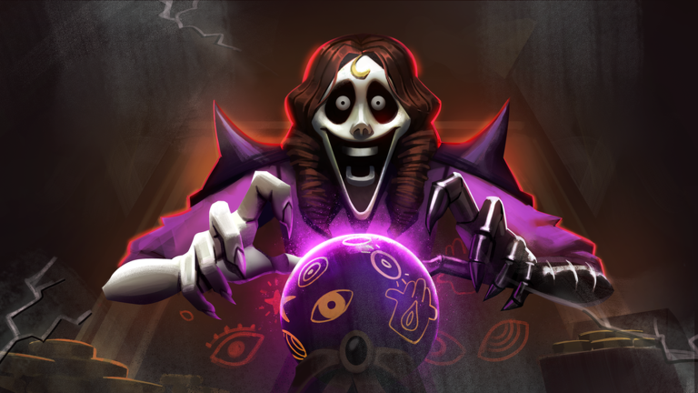

🎪 The Mimic: Nightmare Circus a revenit azi, refăcut de la zero — ține până duminică, 1 nov

Nightmare Circus s-a întors în The Mimic! Evenimentul oficial „NIGHTMARE CIRCUS RETURNS” de la CTStudio a revenit azi, luni 26 oct, la 05:00 (ora României) și ține până duminică, 1 nov, ~08:22.
Ce spune pagina oficială:
- Nightmare Circus e refăcut complet de la zero, ca un revamp al evenimentului original.
- Puzzle-uri noi, monștri noi și redesenați, gameplay actualizat și zone refăcute în tot evenimentul.
- 4 lanterne noi și mecanici noi de descoperit.
CTStudio glumește chiar ei pe pagina evenimentului: toată lumea face schelete, zombi sau vampiri, ei fac un circ. 🎪
Tot azi, pe pagina oficială a jocului mai apare un eveniment separat: „THE MIMIC X KEN CARSON” (colaborare oficială cu Xperiment-ul lui Ken Carson), de azi de la 19:00 până duminică, 1 nov, ~08:55 (ora României). Pagina zice că trebuie să supraviețuiești lui XGATA și să scapi, iar cine termină evenimentul primește o lanternă exclusivă, limitată.
Intră pe The Mimic cât e live circul și spune-ne în comentarii ce lanternă ai luat!
Follow = Au ce bile! 💥 TikTok @vexu_online + YouTube VEXU Online.
✅ CONFIRMAT
⚠️ ZVON
- Conturi de fani (@kenrelated, @Lidesty) au scris că noua anomalie din colaborarea cu Ken Carson se numește „GATA-0” și că a apărut din expunerea la muzica lui Ken, cu un laborator nou și un stick USB ascuns. Pagina oficială vorbește doar de „XGATA”, așa că numele „GATA-0” și detaliile astea nu sunt confirmate de CTStudio.